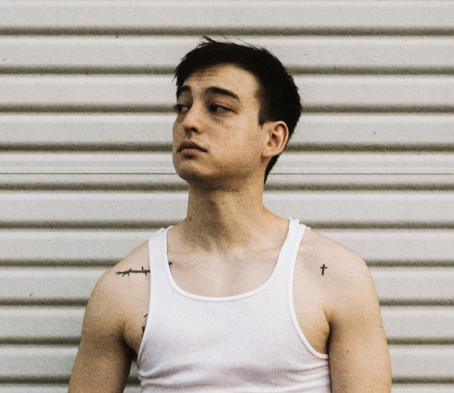

About Joji
Joji 是日澳混血創作歌手、作詞人、唱片製作人與前 YouTuber ，在以 Joji 之名為人熟知前曾以 Filthy Frank 或 Pink Guy 的名義在 YouTube 上發佈搞笑影片的網紅。現在屬於 88rising 旗下藝人，並持續發表歌曲中。
CONTINUE READING

October 23, 2020
A blog exploring music in life
Joji 是日澳混血創作歌手、作詞人、唱片製作人與前 YouTuber ，在以 Joji 之名為人熟知前曾以 Filthy Frank 或 Pink Guy 的名義在 YouTube 上發佈搞笑影片的網紅。現在屬於 88rising 旗下藝人，並持續發表歌曲中。
CONTINUE READINGOctober 23, 2020
NECTAR: THE FINALE TOUR. 註冊以購買預售票 http://JOJINECTARTOUR.COM. 預售: 9/29. 正式開賣: 10/1.
CONTINUE READING
SEPTEMBER 25
Nectar 是 Joji 第二張的錄音室專輯, 在 2020 年 9 月 25 號由 88rising 發行。 主打單曲為 "Sanctuary", "Run", "Gimme Love" 還有與 Diplo 合作的 "Daylight", 與此專輯合作的還有 Benee, Lil Yachty, Omar Apollo, Yves Tumor Rei Brown.
CONTINUE READING
APRIL 17, 2020

OCTOBER 20, 2017